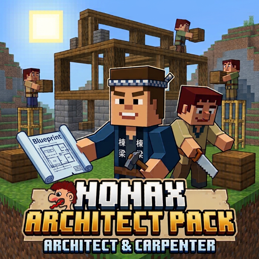
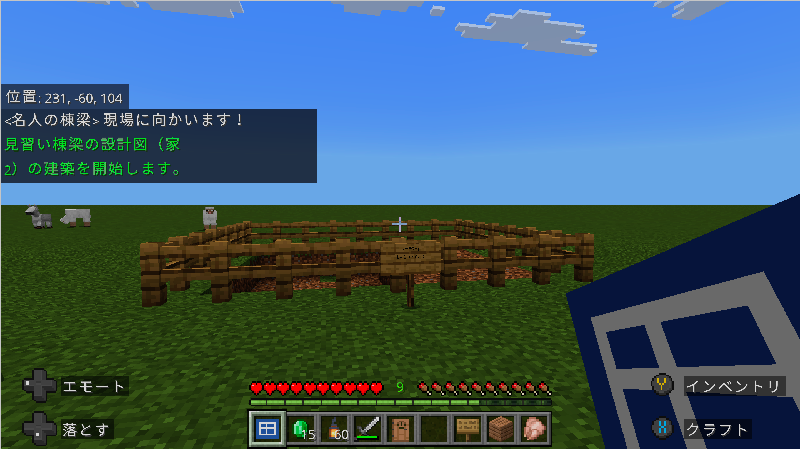
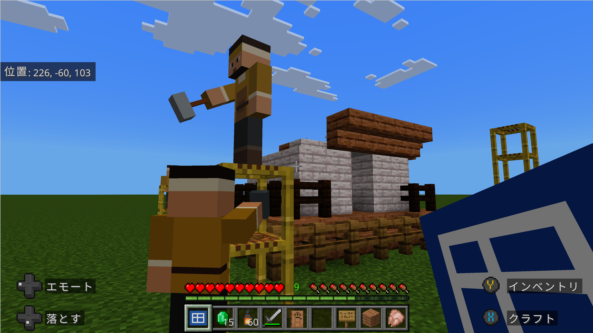
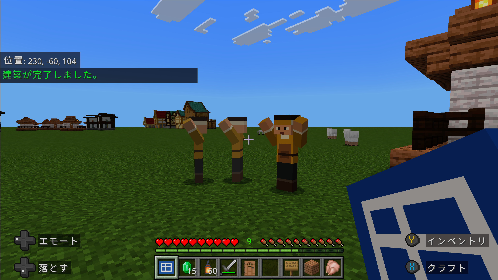

設計図を設置
建築の起点と完成予想のガイドを表示します。
村人に「棟梁（Architect）」職業を加え、設計図を使って建物を一緒に建てる建築アドオン。 足場・囲い・職人の演出をそろえ、建築作業を便利で楽しい体験へ変えます。

設計図から完成まで、建築現場を再現する4ステップ
建築の起点と完成予想のガイドを表示します。
足場、柵、囲い、看板や照明を自動で組みます。
ブロックを1個ずつ配置し、効果音やパーティクルで進行します。
完成後に足場や囲いを片付け、建物だけを残します。
試験プレイで確認中の建築現場と棟梁の様子



見習いから達人まで、棟梁のランクに応じて建築できる設計図と取引アイテムを段階的に解放します。
将来的にはマイクラ内から建物データを出力し、Webツールで設計図を共有・取得できる連携を検討しています。
Minecraft Bedrock Edition v26.62を基準に、設計図データ、ブロック設置、足場システム、棟梁の職業と取引を順に実装しています。